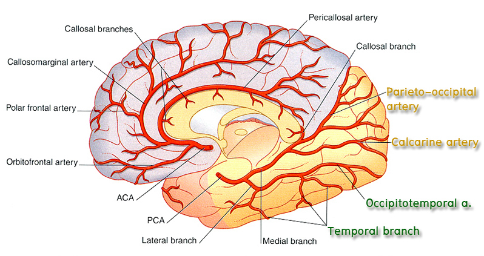

หาและชี้แสดง posterior cerebral artery ซึ่งเป็นแขนงปลายสุดของ basilar artery ซึ่งแตกเป็น bifurcation ที่บริเวณ interpeduncular fossa โดยให้สังเกตว่าจะพบ oculomotor nerve (CN. III) ลอดออกมาระหว่าง posterior cerebral artery กับ superior cerebellar artery นอกจากนี้จะพบว่ามี posterior communicating artery ซึ่งเป็นแขนงหนึ่งของ internal carotid artery มาเชื่อมต่อด้วย
Posterior cerebral artery นี้จะทอดไปบน cerebral hemisphere เพื่อให้แขนงไปเลี้ยง inferior surface ของ temporal lobe รวมทั้งส่วนใหญ่ของ occipital lobe ให้นักศึกษานำสมองผ่าซีกมาหาและชี้แสดงแขนงสำคัญที่ไปที่ occipital lobe ดังนี้
